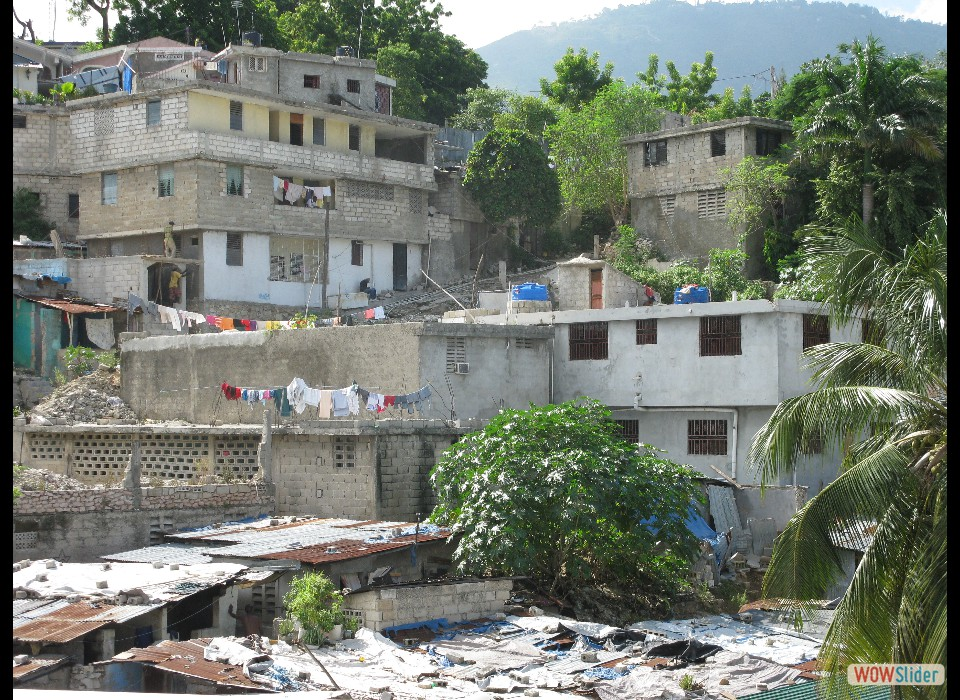
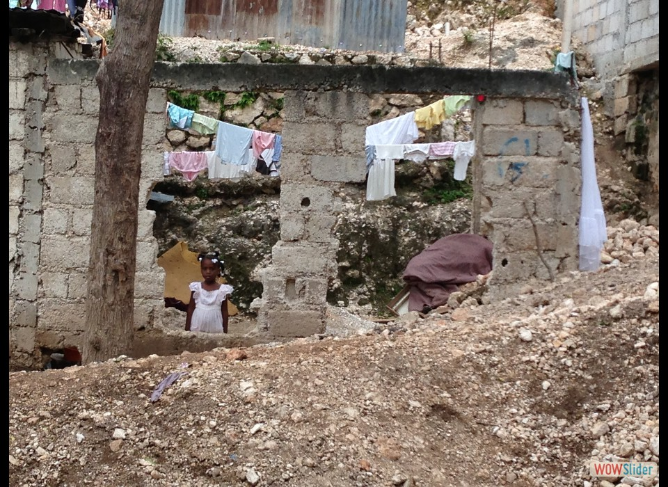
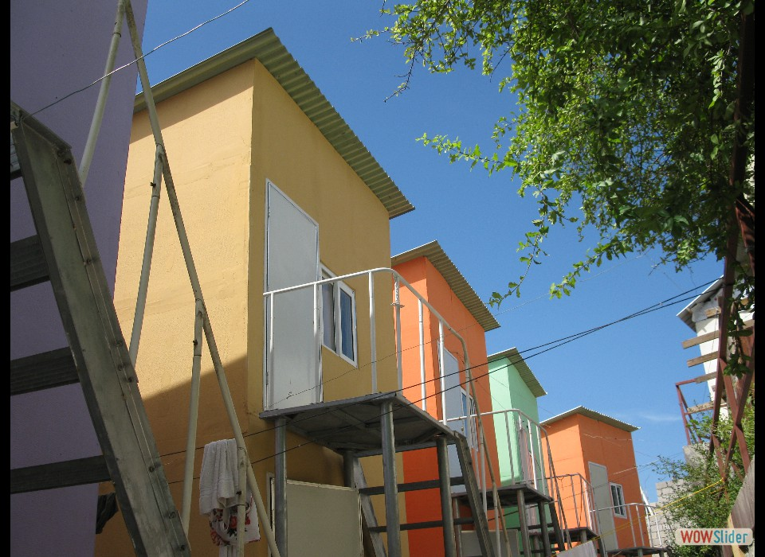
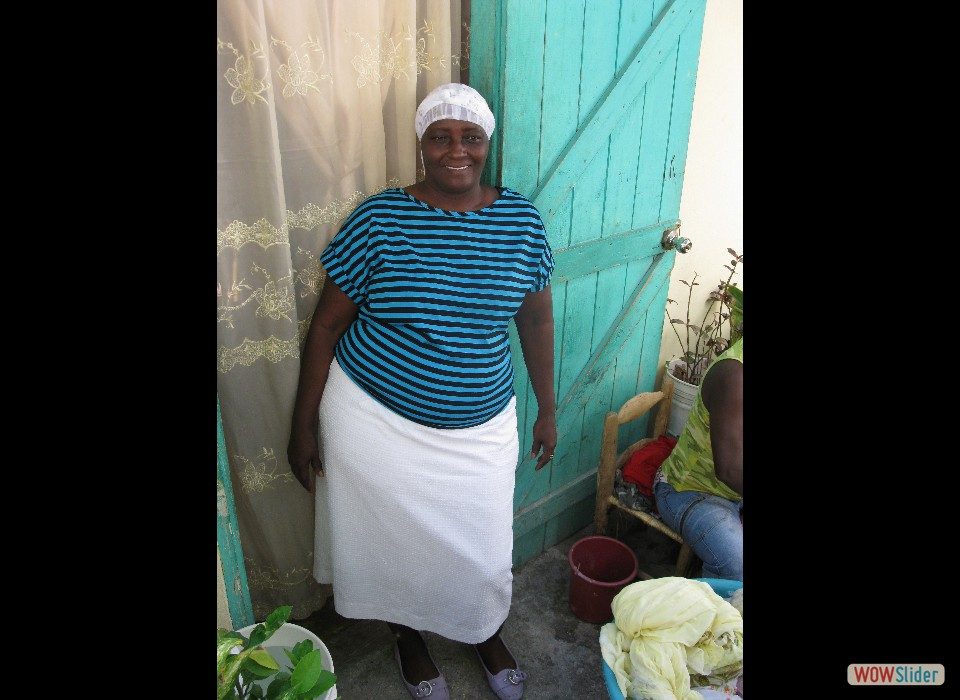
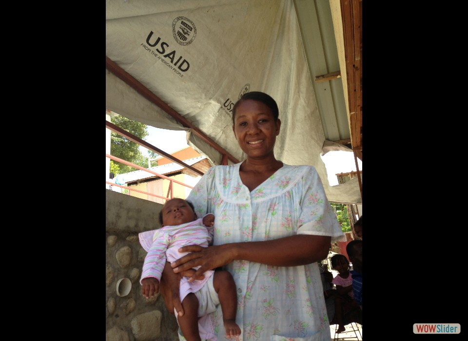
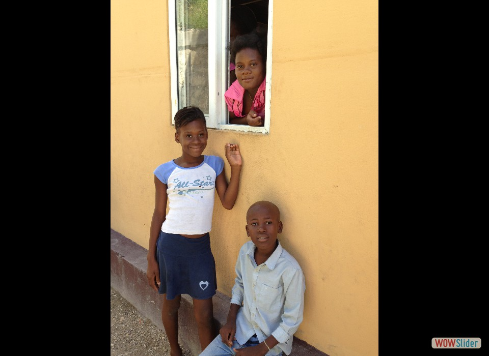
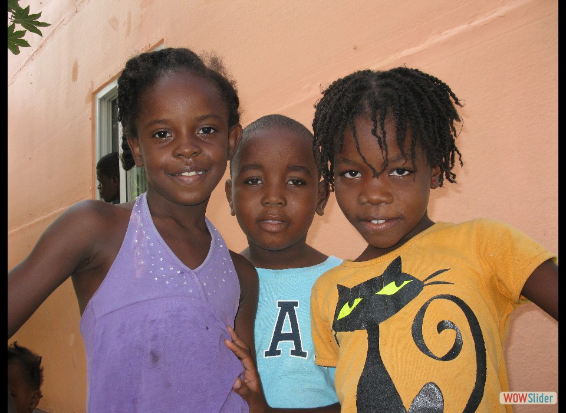

- Haiti is still recovering from the 2010 earthquake that killed an estimated 316,000 people and displaced 1.5 million more. Photo credit: Carol Han, USAID/OFDA.
- The magnitude 7.0 earthquake generated enough rubble to fill dump trucks lined up from Maine to Florida twice. Photo credit: Carol Han, USAID/OFDA.
- In the Ravine Pintade neighborhood, USAID (OFDA) worked with Global Communities and other partners to remove rubble and help rebuild the neighborhood. Photo credit: Carol Han, USAID/OFDA.
 USAID (OFDA) also helped provide 5 water kiosks to Ravine Pintade. Children no longer need to cross dangerously busy streets to get water for the family. Photo credit: Carol Han, USAID/OFDA.
USAID (OFDA) also helped provide 5 water kiosks to Ravine Pintade. Children no longer need to cross dangerously busy streets to get water for the family. Photo credit: Carol Han, USAID/OFDA.- “The only people who cared to visit us was USAID,” said Ravine Pintade resident Mimose Joseph. “I would say the neighborhood’s marvelous now.” Photo credit: Carol Han, USAID/OFDA.
- Resident Yvette Etienne’s message to USAID (OFDA): “It was an extraordinary job that was done. Thank you, thank you, thank you very much.” Photo credit: Carol Han, USAID/OFDA.
- Thanks to the project, children have a safer place to live. Ravine Pintade now has 7,900 feet of retaining walls to stabilize slopes, and homes are built wider apart, all to help protect against future disasters. Photo credit: Carol Han, USAID/OFDA.
- The smiles say it all. The kids in this neighborhood say they know America helped them. Photo credit: Carol Han, USAID/OFDA.